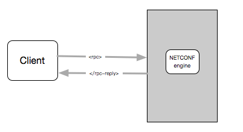
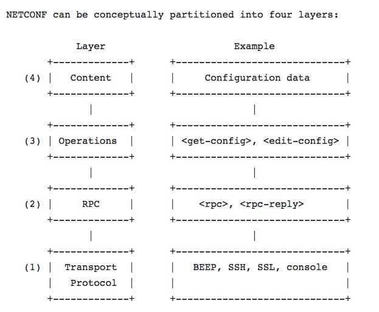
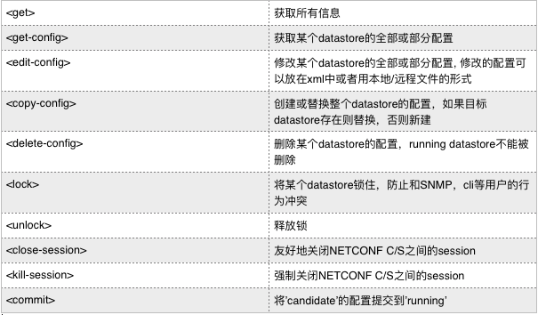
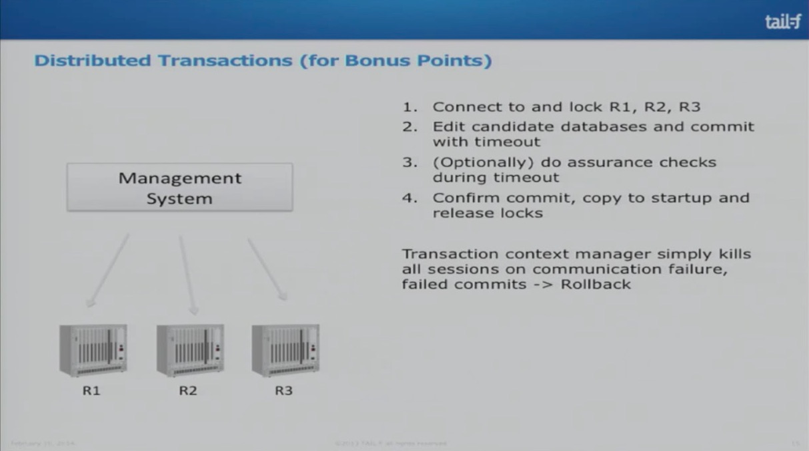
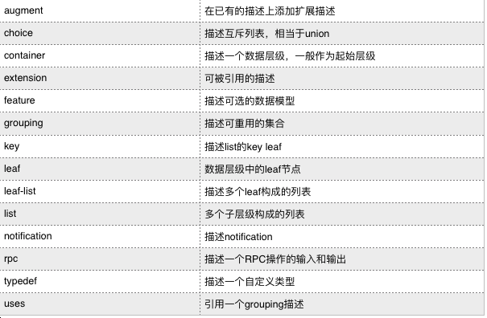
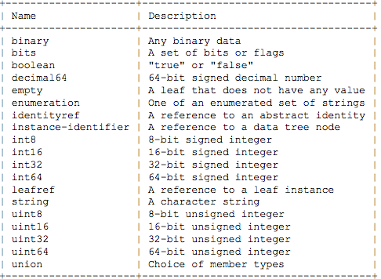
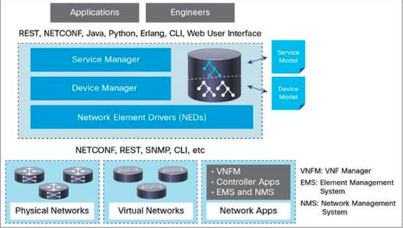

<!DOCTYPE html>
<html lang="en-US">
<head>
  <meta http-equiv="content-type" content="text/html; charset=UTF-8" />
  <meta name="generator" content="Madoko, version 1.1.3" />
  <meta name="viewport" content="initial-scale=1.0" />
  <style type="text/css"  class="link">
  /*# sourceURL=madoko.css */
  
  .madoko .toc>.tocblock .tocblock .tocblock {
    margin-left: 2.25em;
  }
  .madoko .toc>.tocblock .tocblock {
    margin-left: 1.5em;
  }
  .madoko .toc-contents>.tocblock>.tocitem {
    font-weight: bold;
  }
  .madoko .toc {
    margin-top: 1em;
  }
  .madoko p.para-continue {
    margin-bottom: 0pt;
  }
  .madoko .para-block+p {
    margin-top: 0pt;
  }
  .madoko ul.para-block, .madoko ol.para-block {
    margin-top: 0pt;
    margin-bottom: 0pt;
  }
  .madoko ul.para-end, .madoko ol.para-end {
    margin-bottom: 1em;
  }
  .madoko dl {
    margin-left: 0em;
  }
  .madoko blockquote {
    font-style: italic;
  }
  .madoko a.localref {
    text-decoration: none;
  }
  .madoko a.localref:hover {
    text-decoration: underline;
  }
  .madoko .footnotes {
    font-size: smaller;
    margin-top: 2em;
  }
  .madoko .footnotes hr {
    width: 50%;
    text-align: left;
  }
  .madoko .footnote { 
    margin-left: 1em;
  }
  .madoko .footnote-before {
    margin-left: -1em;
    width: 1em;
    display: inline-block;
  }
  .madoko .align-center, .madoko .align-center>p {
    text-align: center !important;
  }
  .madoko .align-center pre {
    text-align: left;
  }
  .madoko .align-center>* {
    margin-left: auto !important;
    margin-right: auto !important;
  }
  .madoko .align-left, .madoko .align-left>p {
    text-align: left !important;
  }
  .madoko .align-left>* {
    margin-left: 0pt !important;
    margin-right: auto !important;
  }
  .madoko .align-right, .madoko .align-right>p {
    text-align: right !important;
  }
  .madoko .align-right>* {
    margin-left: auto !important;
    margin-right: 0pt !important;
  }
  .madoko .align-center>table,
  .madoko .align-left>table,
  .madoko .align-right>table {
    text-align: left !important;
  }
  .madoko .equation-before {
    float: right;
  }
  .madoko .bibitem {
    font-size: smaller;
  }
  .madoko .bibsearch {
    font-size: x-small;
    text-decoration:none;
    color: black;
    font-family: "Segoe UI Symbol", Symbola, serif;
  }
  .madoko .block, .madoko .figure, .madoko .bibitem, .madoko .equation, .madoko div.math {
    margin-top: 1ex;
    margin-bottom: 1ex;
  }
  .madoko .figure {
    padding: 0.5em;
    margin-left: 0pt;
    margin-right: 0pt;
  }
  .madoko .hidden {
    display: none;
  }
  .madoko .invisible {
    visibility: hidden;
  }
  .madoko.preview .invisible {
    visibility: visible;
    opacity: 0.5;
  }
  .madoko code.code, .madoko span.code {
    white-space: pre-wrap;
  }
  .madoko hr, hr.madoko {
    border: none;
    border-bottom: black solid 1px;
    margin-bottom: 0.5ex;
  }
  .madoko .framed>*:first-child {
    margin-top: 0pt;
  }
  .madoko .framed>*:last-child {
    margin-bottom: 0pt;
  }
  .madoko ul.list-style-type-dash {
      list-style-type: none !important;
  }
  .madoko ul.list-style-type-dash > li:before {
      content: "\2013"; 
      position: absolute;
      margin-left: -1em; 
  }
  .madoko table.madoko {
    border-collapse: collapse;
  }
  .madoko td, .madoko th {
    padding: 0ex 0.5ex;
    margin: 0pt;
    vertical-align: top;
  }
  .madoko .cell-border-left {
    border-left: 1px solid black;
  }
  .madoko .cell-border-right {
    border-right: 1px solid black;
  }
  .madoko thead>tr:first-child>.cell-line,
  .madoko tbody:first-child>tr:first-child>.cell-line {
    border-top: 1px solid black;
    border-bottom: none;
  }
  .madoko .cell-line, .madoko .cell-double-line {
    border-bottom: 1px solid black;
    border-top: none;
  }
  .madoko .cell-double-line {
    border-top: 1px solid black;
    padding-top: 1.5px !important;
  }
  .madoko .input-mathpre .MathJax_Display {
    text-align: left !important;
  }
  .madoko div.input-mathpre {
    text-align: left;
    margin-top: 1.5ex;
    margin-bottom: 1ex;
  }
  .madoko .math-rendering {
    text-align: left;
    white-space: pre;
    color: gray;
  }
  .madoko .mathdisplay {
    text-align: center;
  }
  .madoko .pretty table {
    border-collapse: collapse;
  }
  .madoko .pretty td {
    padding: 0em;
  }
  .madoko .pretty td.empty {
    min-width: 1.5ex;
  }
  .madoko .pretty td.expander {
    width: 100em;
  }
  body.madoko, .madoko .serif {
    font-family: Cambria,"Times New Roman","Liberation Serif","Times",serif;
  }
  .madoko .sans-serif {
    font-family: "Calibri", "Optima", sans-serif;
  }
  .madoko .symbol {
    font-family: "Segoe UI Symbol", Symbola, serif;
  }
  body.madoko {  
    -webkit-text-size-adjust: 100%;       
    text-rendering: optimizeLegibility;
  }
  body.madoko {
    max-width: 88ex; 
    margin: 1em auto;
    padding: 0em 2em;  
  }
  body.preview.madoko {
    padding: 0em 1em;
  }
  .madoko p {
    text-align: justify;
  }
  .madoko h1, .madoko h2, .madoko h3, .madoko h4 { 
    margin-top: 1.22em; 
    margin-bottom: 1ex;
  }
  .madoko h1+p, .madoko h2+p, .madoko h3+p, .madoko h4+p, .madoko h5+p  { 
    margin-top: 1ex;    
  }
  .madoko h5, .madoko h6 { 
    margin-top: 1ex;
    font-size: 1em;
  }
  .madoko h5 { 
    margin-bottom: 0.5ex;
  }
  .madoko h5 + p {
    margin-top: 0.5ex;
  }
  .madoko h6 { 
    margin-bottom: 0pt;
  }
  .madoko h6 + p {
    margin-top: 0pt;
  }
  .madoko pre, .madoko code, .madoko kbd, .madoko samp, .madoko tt, 
  .madoko .monospace, .madoko .token-indent, .madoko .reveal pre, .madoko .reveal code, .madoko .email {
    font-family: Consolas,"Andale Mono WT","Andale Mono",Lucida Console,Monaco,monospace,monospace;
    font-size: 0.85em;
  }
  .madoko pre code, .madoko .token-indent {
    font-size: 0.95em;
  }
  .madoko pre code {
    font-family: inherit !important;
  }
  .madoko ol.linenums li {
    background-color: white;
    list-style-type: decimal;
  }
  .madoko .remote {
    background-color: #F0FFF0;
  }
  .madoko .remote + * {
    margin-top: 0pt;
  }
  @media print {
    body.madoko {
      font-size: 10pt;
    }
    @page {
      margin: 1in 1.5in;
    }
  }
  @media only screen and (max-device-width:1024px) {
    body.madoko {
      padding: 0em 0.5em;    
    }
    .madoko li {
      text-align: left;
    }
  }
  
    </style>
  
  </head>
<body class="madoko">
	<h2 style="text-align:center">NETCONF&YANG 介绍</h2>
	<h5 style="text-align:right">update@2017-06-01</h5>

<div class="body madoko" style="line-adjust:0"><h2 id="section" class="h1" data-heading-depth="1" style="display:block"><span class="heading-before"><span class="heading-label">1</span>.&#8194;</span>背景</h2>
<p class="p noindent">随着互联网的发展，网络日趋复杂且规模庞大。网络的稳定性／可预测的故障恢复时间如何保障？大量的新设备和服务如何安全快速地融入老的系统？不同的厂商接口如何统一管理？这些问题需要大量的优秀工程师去处理，但另一个事实是，相当一部分的网络故障是由人为操作不当引起的。通过自动化网络管理去减轻工程师的运维负担是大势所趋。在2002年IAB（Internet Architecture Board ）就网络管理所面临的问题作了讨论（<a href="https://tools.ietf.org/pdf/rfc3535.pdf">RFC3535</a>)，确定了四个解决问题的关键方向，支持事物／可回滚／实现成本低／配置可存储和恢复。随即NETCONF工作小组成立，基于这几个方向制定了NETCONF标准(<a href="https://tools.ietf.org/pdf/rfc6241.pdf">RFC6241</a>). NETCONF协议包含四层，数据层/操作层/调用层/传输层, 但是缺少一种定义数据模型的方式，2008年NETMOD工作组成立，2009年NETMOD发布了YANG（<a href="https://tools.ietf.org/pdf/rfc7950.pdf">RFC7950</a>）, 一种为NETCONF定义数据模型的标准语言。
</p><h2 id="sec-neconf" class="h1" data-heading-depth="1" style="display:block"><span class="heading-before"><span class="heading-label">2</span>.&#8194;</span>NECONF</h2><h5 id="section" class="h4" data-heading-depth="4" style="display:block">术语</h5>
<ul class="ul list-star compact">
<li class="li ul-li list-star-li compact-li">datastore 网络设备上配置的存储和分类方式，分为三种，startup/candidate/running

<ul class="ul list-star compact">
<li class="li ul-li list-star-li compact-li">startup 设备启动时使用的配置
</li>
<li class="li ul-li list-star-li compact-li">candidate 可供修改但不会立即生效的配置，可以通过commit操作提交，成为running配置，不是所有的设备都支持candidate配置, 比如cisco asa。
</li>
<li class="li ul-li list-star-li compact-li">running 设备当前使用的配置
</li></ul></li>
<li class="li ul-li list-star-li compact-li">capabilities NETCONF server端向client端暴露自己所支持的功能，NETCONF协议制定了一些基本功能，以urn开头
</li></ul>

<pre class="para-block pre-fenced pre-fenced3" style="display:block"><code>urn:ietf:params:netconf:capability:{name}:1.x</code></pre><h5 id="section" class="h4" data-heading-depth="4" style="display:block">工作机制</h5>
<p class="p noindent">NETCONF是C/S架构的模式，Client和Server通过RPC以xml形式交换数据。Client端作为网络管理服务的一部分，可以是脚本，也可以是应用等。Server端一般是网络设备。
</p>
<p class="p indent">
</p><h5 id="section" class="h4" data-heading-depth="4" style="display:block">四个层次</h5>
<p class="p noindent">NETCONF包含了四个层次，数据层／操作层／RPC/传输层, 对于普通用户，只需关注数据层和操作层即可。
</p>
<p class="p indent">
</p><h6 id="sec-content" class="h6" data-heading-depth="6" style="display:block">Content</h6>
<p class="p noindent">设备模型数据，YANG数据建模语言正是用来描述这些模型数据的。
</p><h6 id="sec-operations" class="h6" data-heading-depth="6" style="display:block">Operations</h6>
<p class="p noindent">操作层定义了一系列用于网络设备管理的操作。
</p>
<p class="p indent">
</p><h6 id="sec-rpc" class="h6" data-heading-depth="6" style="display:block">RPC</h6>
<p class="p noindent">定义了一种独立于协议之上( transport-protocol-independent)的数据组织和传输方式。
</p><h6 id="sec-transport-protocol" class="h6" data-heading-depth="6" style="display:block">Transport Protocol</h6>
<p class="p noindent">定义了数据的传输方式， NETCONF并没有指定协议实现者在C/S之间使用什么传输协议，只是规定了一些传输协议必须满足的要求，比如面向连接／支持kee-alive等，具体的参见<a href="https://tools.ietf.org/pdf/rfc6241.pdf">RFC6241</a>.
</p><h5 id="section" class="h4" data-heading-depth="4" style="display:block">实际环境中的使用</h5>
<p class="p noindent">我们使用juniper的vsrx来做NETCONF的使用示例。
</p><h6 id="sec-vsrx" class="h6" data-heading-depth="6" style="display:block">vsrx安装</h6>
<ol class="ol compact">
<li class="li ol-li compact-li">下载<a href="http://www.juniper.net/support/downloads/?p=vsrx">vsrx</a>
</li>
<li class="li ol-li compact-li">使用vmware等虚拟化软件安装并启动vsrx
</li>
<li class="li ol-li compact-li">配置vsrx
3.1 通过缺省用户名和密码登录(root/空)
3.2 进入操作模式

<pre class="para-block pre-fenced pre-fenced3" style="display:block"><code>cli</code></pre>3.3 进入配置模式

<pre class="para-block pre-fenced pre-fenced3" style="display:block"><code>configure</code></pre>3.4 设置密码

<pre class="para-block pre-fenced pre-fenced3" style="display:block"><code>set system root-authentication plain-text-password</code></pre>3.5 设置远程登录管理用户

<pre class="para-block pre-fenced pre-fenced3" style="display:block"><code>set system login user remote class super-user authentication plain-text-password</code></pre>3.6 设置网络

<pre class="para-block pre-fenced pre-fenced3" style="display:block"><code>set interfaces fxp0 unit 0 family inet address 172.16.240.189/24</code></pre>3.7 设置netconf ssh port

<pre class="para-block pre-fenced pre-fenced3" style="display:block"><code>set system services  netconf ssh port 830</code></pre>3.8 提交配置

<pre class="para-block pre-fenced pre-fenced3" style="display:block"><code>commit check
commit</code></pre></li></ol>
<h6 id="sec-netconf-clients" class="h6" data-heading-depth="6" style="display:block">NETCONF clients</h6>
<p class="p noindent">client列表
</p>
<ul class="ul list-star compact">
<li class="li ul-li list-star-li compact-li"><a href="https://github.com/Juniper/go-netconf">go-netconf</a> 
</li>
<li class="li ul-li list-star-li compact-li"><a href="https://github.com/ncclient/ncclient">ncclient</a>
</li>
<li class="li ul-li list-star-li compact-li"><a href="https://github.com/Juniper/netconf-java">netconf-java</a>
</li>
<li class="li ul-li list-star-li compact-li"><a href="https://github.com/tail-f-systems/JNC">JNC</a>
</li></ul>
<h6 id="sec-session" class="h6" data-heading-depth="6" style="display:block">创建一个session</h6>
<p class="p noindent">连接完成后，server端会返回自己的capabilities
</p>
<pre class="para-block pre-fenced pre-fenced3" style="display:block"><code>package main

import (
    &quot;fmt&quot;
    &quot;golang.org/x/crypto/ssh&quot;
    &quot;log&quot;
    &quot;github.com/Juniper/go-netconf/netconf&quot;
)

func main() {
    sshConfig := &amp;ssh.ClientConfig{
        User: &quot;root&quot;,
        Auth: []ssh.AuthMethod{ssh.Password(&quot;r00ttest&quot;)},
        HostKeyCallback: ssh.InsecureIgnoreHostKey(),
    }

    s, err := netconf.DialSSH(&quot;172.16.240.189&quot;, sshConfig)

    if err != nil {
        log.Fatal(err)
    }

    defer s.Close()

    fmt.Println(s.ServerCapabilities)
    fmt.Println(s.SessionID)
}</code></pre><h6 id="sec-running" class="h6" data-heading-depth="6" style="display:block">获取running配置</h6>
<p class="p noindent">你会看到running的所有配置
</p>
<pre class="para-block pre-fenced pre-fenced3" style="display:block"><code>package main

import (
    &quot;fmt&quot;
    &quot;golang.org/x/crypto/ssh&quot;
    &quot;log&quot;

    &quot;github.com/Juniper/go-netconf/netconf&quot;
)

func main() {
    sshConfig := &amp;ssh.ClientConfig{
        User: &quot;root&quot;,
        Auth: []ssh.AuthMethod{ssh.Password(&quot;r00ttest&quot;)},
        HostKeyCallback: ssh.InsecureIgnoreHostKey(),
    }

    s, err := netconf.DialSSH(&quot;172.16.240.189&quot;, sshConfig)

    if err != nil {
        log.Fatal(err)
    }

    defer s.Close()

    fmt.Println(s.ServerCapabilities)
    fmt.Println(s.SessionID)

    // Sends raw XML
    reply, err := s.Exec(netconf.RawMethod(&quot;&lt;get-config&gt;&lt;source&gt;&lt;running/&gt;&lt;/source&gt;&lt;/get-config&gt;&quot;))
    if err != nil {
        panic(err)
    }
    fmt.Printf(&quot;Reply: %+v&quot;, reply)
}</code></pre><h6 id="section" class="h6" data-heading-depth="6" style="display:block">修改配置并提交</h6>
<p class="p noindent">包括错误回滚
</p>
<pre class="para-block pre-fenced pre-fenced3" style="display:block"><code>package main

import (
    &quot;fmt&quot;
    &quot;golang.org/x/crypto/ssh&quot;
    &quot;log&quot;

    &quot;github.com/Juniper/go-netconf/netconf&quot;
)

func doRpc(s *netconf.Session, xml string) {
    reply, err := s.Exec(netconf.RawMethod(xml))
    if err != nil {
        panic(err)
    }
    fmt.Printf(&quot;Reply: %+v&quot;, reply)
}

func main() {
    sshConfig := &amp;ssh.ClientConfig{
        User: &quot;root&quot;,
        Auth: []ssh.AuthMethod{ssh.Password(&quot;r00ttest&quot;)},
        HostKeyCallback: ssh.InsecureIgnoreHostKey(),
    }

    s, err := netconf.DialSSH(&quot;172.16.240.189&quot;, sshConfig)

    if err != nil {
        log.Fatal(err)
    }

    defer s.Close()

    fmt.Println(s.ServerCapabilities)
    fmt.Println(s.SessionID)
    //xml := &quot;&lt;rpc&gt;&quot;
    xml := &quot;&quot;
    xml += &quot;&lt;edit-config&gt;&quot;
    xml += &quot;  &lt;target&gt;&lt;candidate/&gt;&lt;/target&gt;&quot;
    xml += &quot;  &lt;error-option&gt;stop-on-error&lt;/error-option&gt;&quot;
    xml += &quot;        &lt;config&gt;&quot;
    xml += &quot;        &lt;configuration&gt;&quot;
    xml += &quot;            &lt;interface&gt;&quot;
    xml += &quot;                &lt;name&gt;fxp0&lt;/name&gt;&quot;
    xml += &quot;            &lt;unit&gt;&quot;
    xml += &quot;                &lt;name&gt;0&lt;/name&gt;&quot;
    xml += &quot;                &lt;family&gt;&quot;
    xml += &quot;                    &lt;inet&gt;&quot;
    xml += &quot;                        &lt;address&gt;172.16.240.189/24&lt;/address&gt;&quot;
    xml += &quot;                    &lt;/inet&gt;&quot;
    xml += &quot;                &lt;/family&gt;&quot;
    xml += &quot;            &lt;/unit&gt;&quot;
    xml += &quot;            &lt;/interface&gt;&quot;
    xml += &quot;        &lt;/configuration&gt;&quot;
    xml += &quot;        &lt;/config&gt;&quot;
    xml += &quot;&lt;/edit-config&gt;&quot;
    //xml += &quot;&lt;/rpc&gt;

    // Sends raw XML
    doRpc(s, xml)
    xml = &quot;&lt;rpc&gt;&lt;commit&gt;&lt;/commit&gt;&lt;/rpc&gt;&quot;
    doRpc(s, xml)
}</code></pre><h5 id="sec-distributied-transactions" class="h4" data-heading-depth="4" style="display:block">Distributied transactions</h5>
<p class="p noindent">当有多个设备需要修改配置时，为了保证操作的原子性，我们可以先锁定所有设备的配置，修改完成后，利用confirmed-commit特性，check完之后再确认提交。
</p>
<p class="p indent">
</p><h3 id="sec-yang" class="h2" data-heading-depth="2" style="display:block"><span class="heading-before"><span class="heading-label">2.1</span>.&#8194;</span>YANG</h3>
<p class="p noindent">YANG是为NETCONF而生的数据建模语言, 应用在NETCONF的content层和operation层。YANG用层级的方式描述NETCONF的配置和状态数据,RPC及通知，覆盖了NETCONF C/S的整个生命周期。YANG模型可以转换成JSON和XML。
</p><h5 id="sec-statements" class="h4" data-heading-depth="4" style="display:block">statements</h5>
<p class="p noindent">YANG定义了一系列的模型描述关键字。
</p>
<p class="p indent">
</p><h5 id="sec-types" class="h4" data-heading-depth="4" style="display:block">types</h5>
<p class="p noindent">YANG定义了一系列的基础类型，同时可以用typedef描述自定义的类型, 一些通用的扩充类型可以参见<a href="https://tools.ietf.org/pdf/rfc6021.pdf">RFC6021</a>
</p>
<p class="p indent">
</p><h5 id="sec-yangdhcp" class="h4" data-heading-depth="4" style="display:block">使用YANG来描述一个DHCP配置</h5><h6 id="sec-dhcp" class="h6" data-heading-depth="6" style="display:block">DHCP配置</h6>
<pre class="para-block pre-fenced pre-fenced3" style="display:block"><code># Sample configuration file for ISC dhcpd

default-lease-time 600;
max-lease-time 7200;

subnet 10.254.239.0 netmask 255.255.255.224 {
  range dynamic-bootp 10.254.239.10 10.254.239.20;
  option routers rtr-239-0-1.example.org, rtr-239-0-2.example.org;
  max-lease-time 1200;
}

shared-network 224-29 {
  subnet 10.17.224.0 netmask 255.255.255.0 {
    range 10.17.224.10 10.17.224.250;
    option routers rtr-224.example.org;
  }
  subnet 10.0.29.0 netmask 255.255.255.0 {
    range 10.0.29.10 10.0.29.230;
    option routers rtr-29.example.org;
  }
}</code></pre><h6 id="sec-yang" class="h6" data-heading-depth="6" style="display:block">YANG模型</h6>
<pre class="para-block pre-fenced pre-fenced3" style="display:block"><code>module dhcp { // dhcp module
    namespace &quot;songtianyi:yang:dhcp&quot;;
    prefix dhcp;
    import ietf-yang-types { // 导入自定义类型
        prefix yang;
    }
    import ietf-inet-types {
        prefix inet;
    }

    organization &quot;TIANYUAN CLOUD TECH&quot;;
    description &quot;Partial data model for DHCP, based on the config of the ISC DHCP reference implementation.&quot;;

    container dhcp { // 根结点
        description &quot;configuration and operational parameters for a DHCP server.&quot;;

        leaf max-lease-time { // 描述最大租赁期
            type uint32;
            units seconds;    // 定义单位
            default 7200;    // 最大租赁期默认值
        }

        leaf default-lease-time {
            type uint32;
            units seconds;
            must &#39;current() &lt;= ../max-lease-time&#39; { // 约束,  default-lease-time必须小于等于 max-lease-time
                error-message &quot;The default-lease-time must less or equal max-lease-time&quot;;
            }
            default 600; // 如果默认值大于 max-lease-time也会报错
        }

        uses subnet-list;    // 引用grouping描述

        container shared-networks {
            list shared-network {
                key name;
                leaf name {
                    type string;
                }

                uses subnet-list;
            }
        }
    }

    grouping subnet-list {
        description &quot;A reusable list of subnets&quot;;

        list subnet {
            key net;
            leaf net {
                type inet:ip-prefix;
            }
            container range {
                presence &quot;enables dynamic address assignment&quot;; // presence表明，range作为子节点存在，即使range没有定义子节点
                leaf dynamic-bootp {
                    type empty;
                    description &quot;Allows BOOTP clients to get addresses in this range&quot;;
                }

                leaf low {
                    type inet:ip-address;
                    mandatory true;
                }

                leaf high {
                    type inet:ip-address;
                    mandatory true;
                }
            }

            container dhcp-options {
                description &quot;Options in the DHCP protocol&quot;;

                leaf-list router {
                    type inet:ip-address;
                    ordered-by user;
                }

                leaf domain-name {
                    type inet:domain-name;

                }

                leaf max-lease-time {
                    type uint32;
                    units seconds;
                    default 1200;
                }
            }
        }
    }
}</code></pre><h5 id="sec-yang-tools" class="h4" data-heading-depth="4" style="display:block">YANG tools</h5>
<ul class="ul list-star compact">
<li class="li ul-li list-star-li compact-li"><a href="https://github.com/mbj4668/pyang">pyang</a>
</li>
<li class="li ul-li list-star-li compact-li"><a href="https://github.com/CESNET/libyang">libyang</a>
</li>
<li class="li ul-li list-star-li compact-li"><a href="https://github.com/openconfig/goyang">goyang</a>
</li></ul>
<h3 id="sec-netconfyang" class="h2" data-heading-depth="2" style="display:block"><span class="heading-before"><span class="heading-label">2.2</span>.&#8194;</span>NETCONF&amp;YANG</h3>
<p class="p noindent">前边分别介绍了NETCONF和YANG, 那么它们是如何结合起来的呢？
</p>
<pre class="para-block pre-fenced pre-fenced3" style="display:block"><code>&lt;dhcp xmlns=&quot;http://yang-central.org/ns/example/dhcp&quot; xmlns:nc=&quot;urn:ietf:params:xml:ns:netconf:base:1.0&quot;&gt;
    &lt;default-lease-time nc:operation=&quot;merge&quot;&gt;10800&lt;/default-lease-time&gt;
&lt;/dhcp&gt;</code></pre>
<p class="p noindent para-continued">在netconf client发送xml给netconf server的时候将YANG模型加入xml即可，server会根据模型来检验xml里的配置数据，因此default-lease-time的10800配置会返回rpc-error。需要注意的是，这些特性依赖于netconf server的具体实现，因此需要通过server端返回的capbilities来检查是否支持该特性。
</p>
<p class="p indent">
</p><span data-line=""></span></div>
</body>

</html>
